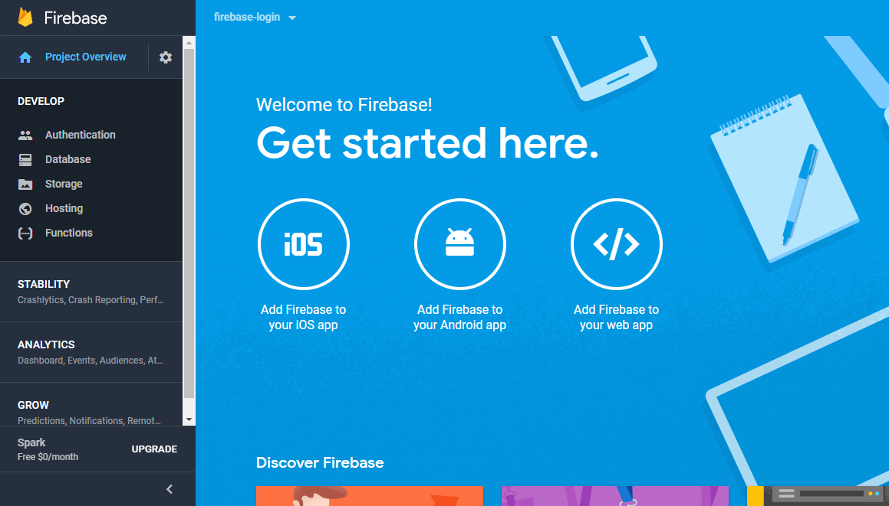

Author
Have you read about these frameworks and find it difficult to put all the functions together and build a project? If yes, our tutorials will help you achieve that.
-- Mr. Kingslife
Setting up the Form
Firebase is a mobile and web application development platform by Google. It provides the backend and other infrastructure allowing you to focus on the logic of your project.
Hoping that you have ionic installed on your machine, run the command below
This will craft a blank ionic project. If ionic is not installed on your command, Check Project 1 for installation procedures.
Next, create the pages
signup page
signin page
Update the src/app/app.module.ts to add the pages generated. Also, since we are going to use forms, add a FormsModule
When the user is authenticated, it will redirect to the home page. Set the sign in page as the first page to be displayed.
Modify app.component.ts
We'll start by building the sigin page. We'll use the template-driven approach of building forms.
Modify signin.html
In the header, we defined the color to be primary which is a variable defined in the variable.scss file in themes. As seen above, we created a reference to the form and pass it to the submit function. The form reference will contain all the form values. Notice we have added validations and disabled the form if the form is not valid.
signin.ts
Fill the form and submit, you should see the values dumped to the console. Let us also work on the signup page. This will be quite similiar to the signin page.
singup.html
signup.ts
It's now time we work on the backend.
Firebase
Remember, we want to use firebase . Firebase will provide us with the backend and authentication features, we'll not need to write any server side code.
Head over to firebase and login. If you have a Google account, then you are ready to start using firebase.
At the top right corner, click on the button GO TO CONSOLE. This will load the dashboard where you can create a new project. Create a new project, name it firebase-login (or name it whatever you want). It redirects you to project dashboard.

We are concerned with authentication for now. Click on Authentication, then sign-in method and enable Email/Password authentication.
We have to install the firebase SDK in our project. Run the command below to install it.
On the project dashboard in firebase, click on Web setup and grab the apikey and authdomain.
Next, configure it in the app.component.ts
With that, firebase is added to our app. Let us now work on authenticating users.